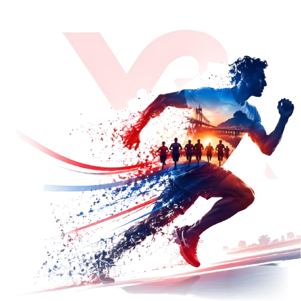

VIJAYAWADA RUNNERS
Go Long : Go Strong
0%
Go Long : Go Strong
Welcome to Andhra Pradesh's most energetic road running community! From weekly sunrise long runs across Prakasam Barrage to the 21.1K Half Marathon, we build fitness, endurance, and community health.

Flag-off: Sunday, 15 Nov 2026 • 5:15 AM at IGMC Stadium, Vijayawada
"Run for your health, run for joy, run for a cause, and most importantly run for yourself." — At Vijayawada Runners, we believe running is more than a sport: it strengthens your heart, sharpens your mind, and builds lifelong resilience.
Running is medical science's ultimate cardiovascular shield. Running regularly lowers resting heart rate, reduces hypertension, and cuts cardiovascular disease risk by up to 45%.
Running floods your system with endorphins, dopamine, and endocannabinoids. It is a proven antidote to workplace anxiety, digital burnout, and depression, providing calm daily clarity.
Endurance running accelerates your basal metabolic rate and continues burning calories hours post-run via EPOC. It sharpens insulin sensitivity and provides sustained, crash-free energy all day.
Contrary to popular myths, recreational running fortifies knee cartilage, increases synovial lubrication, and stimulates bone mineral density to protect against osteoporosis as you age.
When you lace up your shoes at 5:00 AM and push through difficult kilometers, you cultivate mental grit. Conquering the road at dawn makes everyday work and life obstacles effortless.
Swap screen fatigue for morning breezes along BRTS Road and Bandar Road. Run with uplifting citizens of all ages and backgrounds with zero judgment, pure encouragement, and lifelong friends.
Browse dedicated individual pages for every aspect of our club, race day, training, and community.
Discover our founding story inspired by Dream Runners Chennai, leadership team, and SAAP affiliation since 2016.
Read Club Story →21.1K Half Marathon, 10K Timed, 5K Fitness Run, flag-off timeline, ₹3 Lakh prize pool, and route maps.
View Race Details →6 active training hubs across Vijayawada: Benz Circle, Krishna Riverfront, BRTS Road, KL University, and Gunadala.
Find Nearest Chapter →Official 21.1K & 10K Pacer buses with target flags, plus an interactive pace, speed, and split time calculator.
Meet Pacers & Calculate →Search runner timing, split times at 5K/10K/15K, and download official high-resolution completion certificates.
Check Race Results →Breathtaking snapshots of runners crossing Prakasam Barrage, expo celebrations, finish line medals, and podiums.
Browse Photo Gallery →Proudly backed by India's premier financial, medical healthcare, and broadcast entertainment powerhouses who have fueled the Vijayawada Marathon movement.

Empowering millions of dreams with trust, MSME credit, and community welfare initiatives across India.

Deploying advanced medical response units, cardiac ICU ambulances, and on-course hydration aid stations.

Bajaate Raho! Energizing race day morning with high-voltage music, live on-ground RJs, and city-wide buzz.
Shriram FinanceLatha Super Speciality Hospital93.5 RED FM • Bajaate RahoShriram FinanceLatha Super Speciality Hospital93.5 RED FM • Bajaate Raho